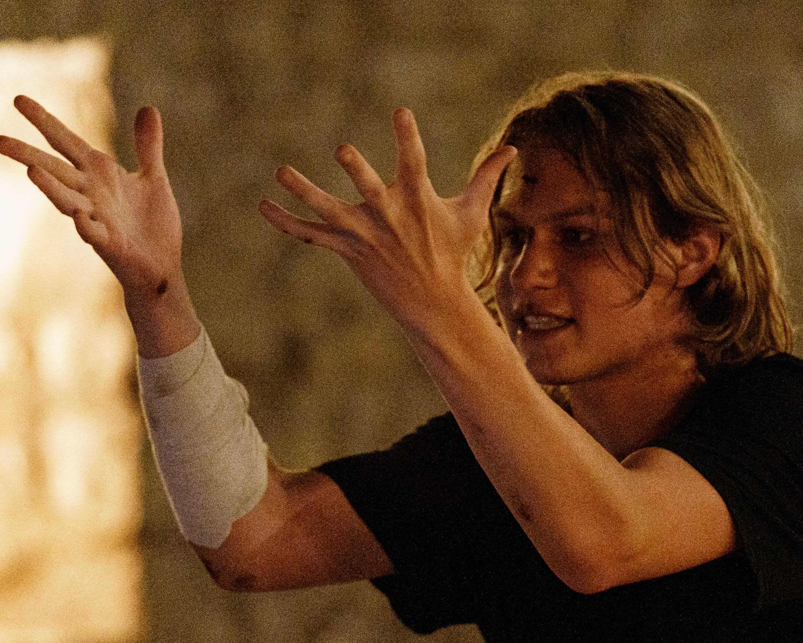
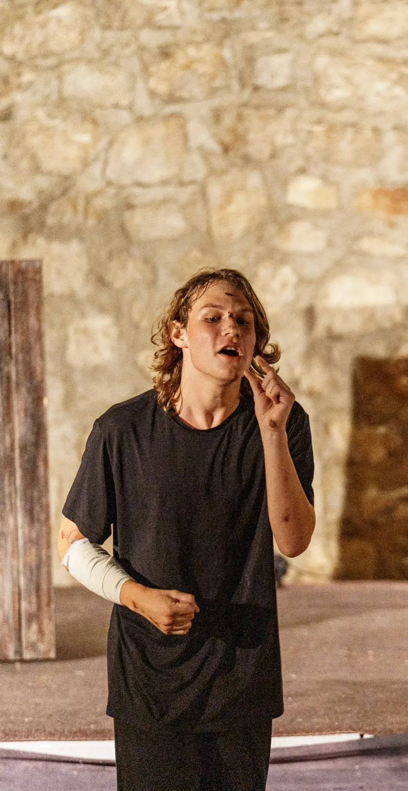
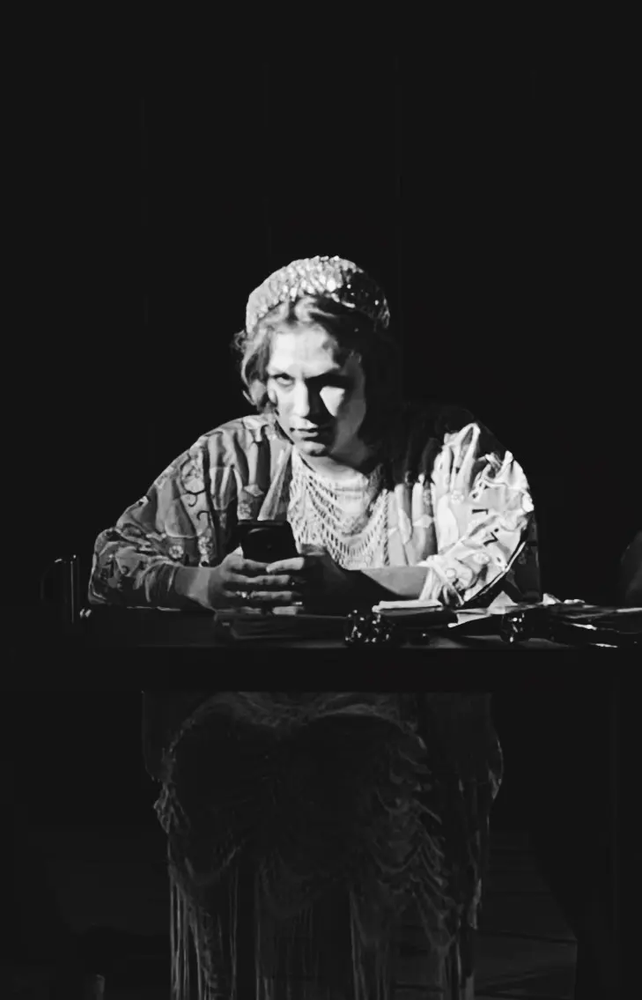

Артём Сапожников
Актёр. Театральный и съёмочный опыт
О себе
С 2022 года занимаюсь в студии Theater.Tochka. Играю характерные и драматические роли, работаю в классических и авторских постановках. Имею опыт работы в театре теней: управление теневыми куклами и участие в создании декораций.
Контактные данные:
Viber: Ольга Сапожникова (представитель) +38263225802
Viber: Артём Сапожников +38268474941
Viber: Ольга Сапожникова (представитель) +38263225802
Viber: Артём Сапожников +38268474941
Опыт и репертуар
- 2026 «Огни святого Доминика» — Второй халдей, Диего, Фра Нуньо. Theater.Tochka, режиссёр: Максим Чацкий.
- 2025–2026 «Мойры» — Вторая мойра. Авторский спектакль (3 показа, Theater.Tochka, Herceg-Novi), режиссёр: Максим Чацкий.
- 2025 «Фонарщик» — Няня / Бабушка. По мотивам сказок Х. К. Андерсена, режиссёр: Максим Чацкий.
- 2025 «Башня из слоновой кости» (Oxxxymiron) — Марк. Неофициальный музыкальный клип.
- 2024 «Дракон» — Бургомистр. По пьесе Евгения Шварца, режиссёр: Максим Чацкий.
- 2023 «Прощайте, вишни!» — Роль: «Можно уйти?». Авторский спектакль, режиссёр: Максим Чацкий.
Характерные и драматические роли, требующие яркой актёрской выразительности.

Спектакль «Огни Святого Доминика». Роль Халдея, 2026 г.

Опыт создания декораций и работы в театре теней.
